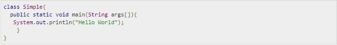
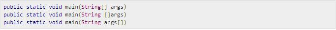
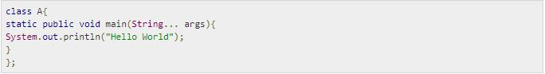
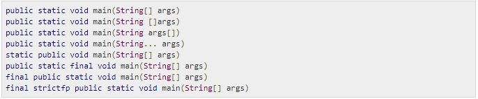
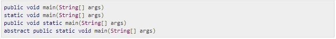

Chương trình Java đầu tiên Hello World
Chương này, chúng ta sẽ học cách viết một chương trình Java đơn giản. Trước khi viết chương trình Hello World, bạn nên cài đặt trước JDK.
Để tạo một chương trình Java đơn giản, bạn cần tạo một lớp chứa phương thức main. Để thực thi bất cứ chương trình Java nào, bạn cần:
Platform: Bất cứ môi trường phần cứng hoặc phần mền nào mà trong đó một chương trình chạy, thì được biết đến như là một Platform. Với môi trường runtime riêng cho mình là JRE và API, Java được gọi là Platform.
Cài đặt JDK nếu bạn chưa cài đặt nó. Bạn tải JDK, và cài đặt.
Thiết lập path của thư mục jdk/bin. (Bạn có thể tham khảo bài trước)
Tạo chương trình Java.
Biên dịch và chạy chương trình Java.
Tạo ví dụ Hello World
Bạn theo dõi ví dụ để viết chương trình Hello World:
Sau đó, bạn lưu file dưới tên Simple.java.
Để biên dịch, bạn gõ: javac Simple.java
Để thực thi, bạn gõ: java Simple
Phân tích chi tiết chương trình Java đầu tiên
Dưới đây, chúng tôi sẽ giúp bạn hiểu ý nghĩa của class, public, static, void, main, String[], System.out.println().
Từ khóa class được sử dụng để khai báo một lớp trong Java.
Từ khóa public là một Access Modifier mà biểu diễn tính nhìn thấy, nghĩa rằng nó là nhìn nhất với tất cả.
static là một từ khóa, mà nếu chúng ta khai báo bất cứ phương thức nào là static thì nó còn được gọi là phương thức tĩnh hoặc phương thức static. Lợi thế chủ yếu của phương thức static là không cần thiết tạo đối tượng để triệu hồi phương thức static. Phương thức main được thực thi bởi JVM, vì thế bạn không cần thiết tạo một đối tượng để gọi phương thức main. Việc này giúp tiết kiệm bộ nhớ.
void là kiểu trả về của phương thức, nghĩa là phương thức không trả về bất cứ giá trị nào.
main tượng trưng cho khởi động chương trình.
String[] args được sử dụng cho tham số dòng lệnh. Bạn sẽ tìm hiểu về chúng sau.
System.out.println() được sử dụng như là lệnh in. Chương sau, bạn sẽ thấy cách làm việc nội tại của lệnh System.out.println này.
Để viết một chương trình đơn giản, bạn mở notepad bởi Start menu -> All Programs -> Accessories -> notepad và viết chương trình đơn giản Hello World trên.
Viết và lưu chương trình dưới dạng Simple.java. Để biên dịch và chạy chương trình này, bạn cần mở dòng nhắc lệnh command prompt bởi Start menu -> All Programs -> Accessories -> command prompt.
Để biên dịch và chạy chương trình, đầu tiên bạn vào thư mục hiện tại, với mình đó là c:\new. Viết ở đây:
Để biên dịch, gõ: javac Simple.java
Để thực thi, gõ: java Simple
Bạn có bao nhiêu cách để viết một chương trình Java
Có nhiều cách để viết một chương trình Java. Các sửa đổi có thể được thực hiện trong chương trình Java như sau:
Thứ nhất bằng việc thay đổi dãy sắp xếp của Modifier, thì nguyên mẫu phương thức không bị thay đổi. Bạn theo dõi phần code đơn giản của phương thức main:
Thứ hai, ký hiệu chỉ số dưới [] trong Mảng Java có thể được sử dụng sau kiểu, ở trước biến hoặc đằng sau biến. Bạn theo dõi các code khác nhau để viết phương thức main:
Thứ ba, bạn có thể cung cấp sự hỗ trợ var-args tới phương thức main bằng cách truyền 3 dấu chấm. Bạn theo dõi code đơn giản sau sử dụng var-args trong phương thức main. Chúng ta sẽ học về var-args trong chương Các đặc điểm mới trong Java.
Thứ tư, việc có hay không dấu chấm phảy ở phần cuối của lớp trong Java là tùy ý. Bạn theo dõi code sau:
Một số phương thức main hợp lệ trong Java:
Một số phương thức main không hợp lệ trong Java:
Giải quyết lỗi "javac is not recognized as an internal or external command"
Nếu xuất hiện một vấn đề như được hiển thị trong hình dưới, thì điều bạn cần làm là thiết lập path. Vì DOS không biết javac hoặc java, do đó chúng ta cần thiết phải thiết lập path. Path là không cần thiết trong những trường hợp mà nếu bạn lưu chương trình bên trong thư mục jdk/bin. Nhưng đôi khi, đây là điều bạn cần biết để có thể xử lý các trường hợp có thể xảy ra. Bạn theo dõi phần này tại Cách thiết lập path trong Java.